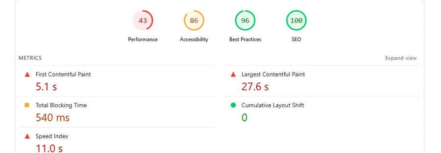
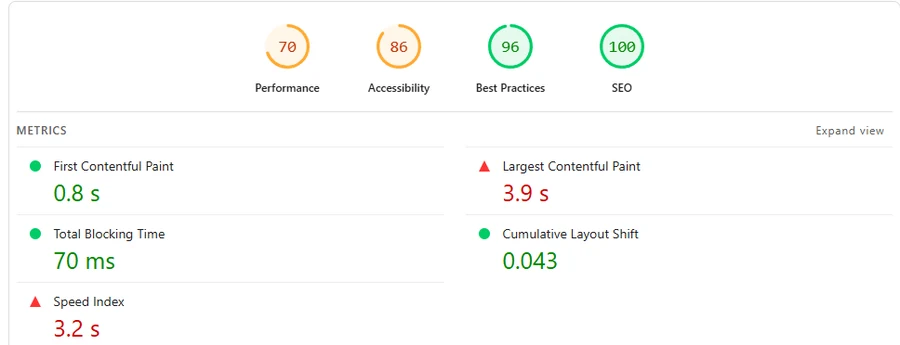
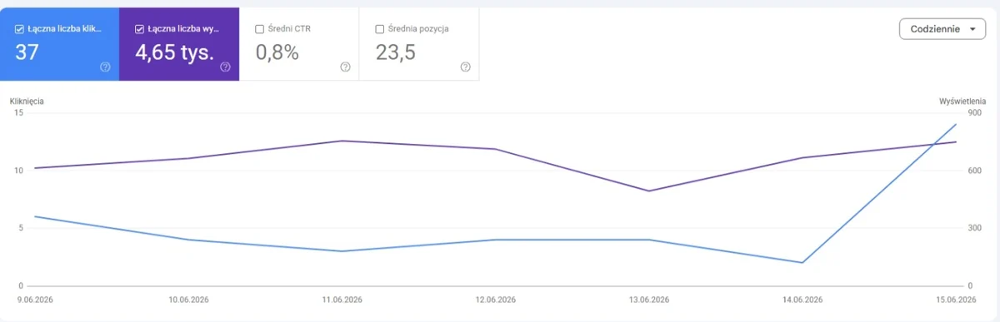

Bez agencji, bez budżetu na płatne kampanie — jedna osoba prowadząca całą stronę, treści, SEO i wizerunek marki dla lokalnej firmy montażowej na Mazowszu. Wszystkie liczby poniżej dotyczą zapytań niebrandowych — zapytania o nazwę firmy to 0,1% widoczności serwisu, więc wzrost nie bierze się z rozpoznawalności marki. Na końcu jeden pełny przykład procesu, krok po kroku.
Klient to lokalny instalator pomp ciepła (powietrze-woda i gruntowe) w województwie mazowieckim — dla właścicieli domów (B2C) i deweloperów (B2B). Serwis ma około 170 podstron. Firma jest mała: dwie osoby w biurze i ekipy montażowe. Nie ma osobnego działu marketingu — całość: stronę WWW, SEO, treści, Google Business Profile i social media prowadzę sam. Nazwa klienta ani zrzuty ekranu serwisu nie są publikowane.
Zaczynałem bez formalnego przygotowania w marketingu cyfrowym. Wiedzę zdobywam na bieżąco — obecnie w trakcie kursu Google Digital Marketing (Coursera) — i od razu wdrażam ją na żywym projekcie, z realnym ryzykiem i realnymi wynikami.
Generyczny motyw WordPress, bez spójnej identyfikacji marki i z realnymi błędami widocznymi dla klienta.
Sekcja „Nasze realizacje" na starej stronie głównej renderowała się jako puste szare pole — zdjęcia z montaży się nie ładowały. Klienci widzieli firmę bez żadnego dowodu wykonanych instalacji.
Zamiast łatać ten sam komponent, zbudowałem nową stronę „Realizacje" z interaktywną mapą montaży na Mazowszu — patrz sekcja wyników niżej.
Przebudowa strony i treści. Nowa struktura oferty, sekcje dopasowane do dwóch grup klientów (właściciele domów i deweloperzy), nowy blog z kategoriami tematycznymi (ogrzewanie podłogowe, pompy powietrze-woda, pompy gruntowe, rekuperacja) zamiast jednego wspólnego szablonu bez podziału.
Nowa strona „Realizacje". Interaktywna mapa ukończonych montaży w województwie mazowieckim z podziałem na typ pompy — realny dowód społeczny zamiast pustego pola z błędem.
SEO i treść merytoryczna. Artykuły o dofinansowaniach (Czyste Powietrze, Moje Ciepło) i doborze pompy ciepła — strona o dofinansowaniu jest dziś najczęściej wyświetlaną podstroną w wyszukiwarce.
Wydajność techniczna. Optymalizacja obrazów, cache, Core Web Vitals — z wynikiem „słabym" do wyniku „zielonego" w Google Lighthouse na wszystkich czterech kategoriach.
Google Business Profile i social media. Bieżące prowadzenie wizytówki, publikacje i komunikacja z klientami — utrzymanie oceny 4.8★ przy rosnącej liczbie opinii.
Ten sam pomiar, ta sama metodologia (Lighthouse, desktop) — zrzut sprzed przebudowy i aktualny.
Google Analytics 4, 1.01–22.09.2026 porównane z tym samym okresem 2025. Kanał organiczny to największe źródło ruchu i największa część wzrostu.
| Kanał | 2026 | 2025 | Zmiana |
|---|---|---|---|
| Wyszukiwarka (organic) | 1 766 | 995 | +77,5% |
| Wejścia bezpośrednie | 1 200 | 828 | +44,9% |
| Reklama w wyszukiwarce | 985 | 658 | +49,7% |
| Display | 944 | 957 | −1,4% |
| Pozostałe | 154 | 545 | −72% |
| Razem | 5 049 | 3 983 | +26,8% |
Zapytania niebrandowe — początek okresu vs. koniec. Dane bez filtra: 125 000 wyświetleń i 745 kliknięć w kwartale, średnia pozycja 15,1.
Największa część tej pracy nie jest widoczna na stronie. To uporządkowanie tego, co widzi wyszukiwarka — i to ona odpowiada za ruch pozycji z 27 na 13.
Konsolidacja duplikatów. Serwis miał po dwa do czterech osobnych adresów opisujących tę samą usługę w tej samej miejscowości — Google dzielił między nie sygnały i żaden nie trafiał wyżej niż druga strona wyników. Około 16 grup scalonych: przeniesienie unikalnej treści na stronę docelową, przekierowanie 301 ze starych adresów, weryfikacja i wycofanie starego wpisu z sitemapy.
Odzyskanie utraconych adresów. 27 adresów zwracało błąd 404 — strony, które Google znał i miał w indeksie, a które przestały istnieć. Każdy taki adres to bezpowrotnie tracona wartość, więc zamiast je zostawić, zostały dopasowane do najbliższych żyjących podstron i przekierowane.
Błąd w linkowaniu wewnętrznym. Link względny bez ukośnika na początku generował nieistniejące podstrony — osobne dla każdej strony, na której ten link stoi. Diagnoza z raportu indeksowania, poprawka w jednym miejscu.
Metoda, nie zgadywanie. O tym, które podstrony scalić, decydowało porównanie zestawów zapytań dla każdej z nich w Search Console — nie podobieństwo adresów. Kilka artykułów wokół jednego tematu to głębia tematyczna, nie kanibalizacja; kanibalizacja to dwie strony celujące w to samo zapytanie. To rozróżnienie uratowało kilka tekstów przed niepotrzebnym scaleniem.
Zrzuty są przycięte — domena, nazwa zasobu i podgląd strony nie są publikowane. Liczby i daty pozostały nietknięte.



Tak wygląda typowy dzień: nowa podstrona „Montaż ogrzewania podłogowego" — od zgłoszonego problemu do wdrożenia.
Nagłówek na nowej podstronie był nieprzezroczysty, zamiast przezroczysty na tle zdjęcia — jak na pozostałych stronach. Zamiast doklejać wyjątek CSS, sprawdziłem logikę motywu i znalazłem właściwą przyczynę: filtr przypisujący klasy w functions.php rozpoznawał tylko szablony z prefiksem template-landing, a nowa strona miała inną nazwę pliku.
Poprawka: jedna dodatkowa reguła warunkowa, zero efektów ubocznych na innych podstronachPierwsza wersja tekstów sugerowała, że ogrzewanie podłogowe montujemy wyłącznie razem z pompą ciepła. W praktyce firma robi to też jako usługę samodzielną. Przeszedłem przez cały nagłówek, karty ofertowe i FAQ, żeby usunąć to założenie z każdego miejsca, w którym się pojawiało.
Poprawka: przeredagowanie nagłówka, 3 kart oferty i sekcji FAQIstniejąca sekcja sugerowała, że firma pomaga klientom wypełniać wnioski o dofinansowanie (Czyste Powietrze, Moje Ciepło) — to nieprawda, firma tego nie robi. Zamiast zostawić to bez zmian lub ograniczyć się do wycięcia jednej karty, przeprojektowałem cały blok na sekcję zaufania opartą na realnych, sprawdzalnych faktach: ocena Google i sposób pracy firmy.
Poprawka: nowa sekcja, zero nieprawdziwych deklaracji, ten sam styl wizualny stronyW trakcie sesji stracił się bezpośredni dostęp do zapisu plików na serwerze. Zamiast zatrzymać pracę, przygotowałem gotowe fragmenty kodu do wklejenia — dokładnie oznaczone, co i gdzie zmienić w panelu WordPress — żeby wdrożenie mogło pójść dalej bez przestoju.
Poprawka: instrukcja wdrożenia krok po kroku zamiast bezpośredniej edycji